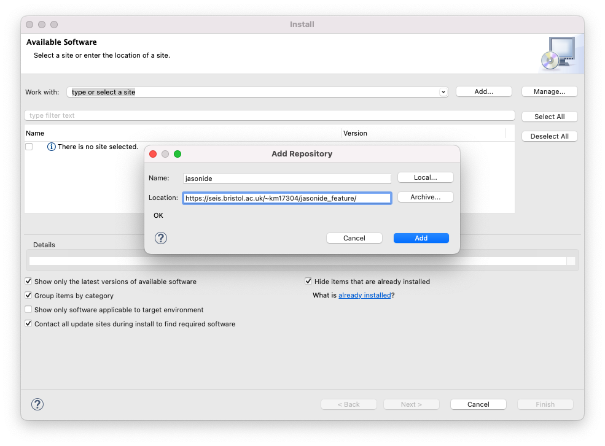
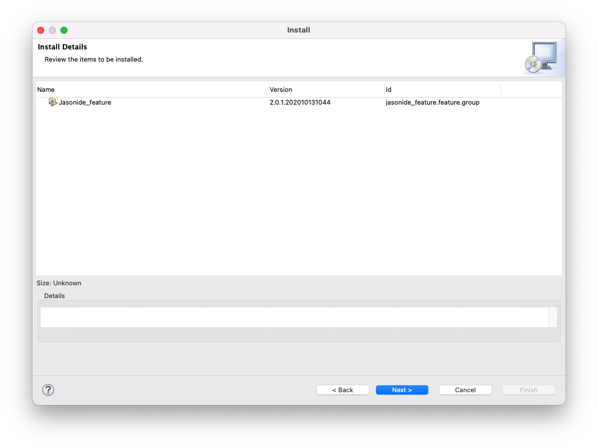
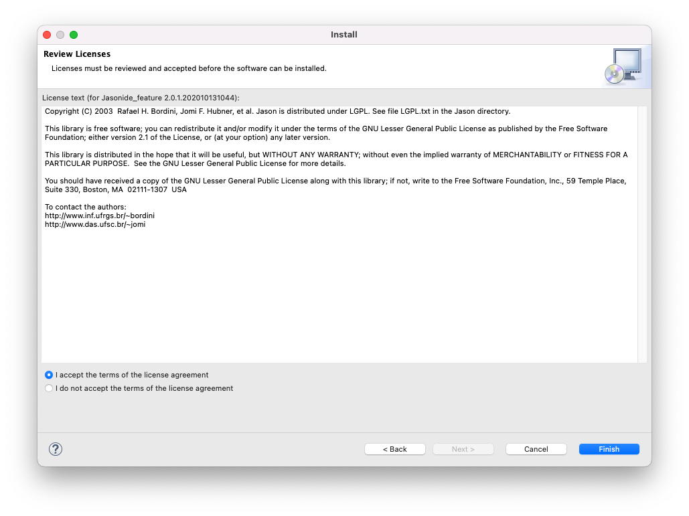
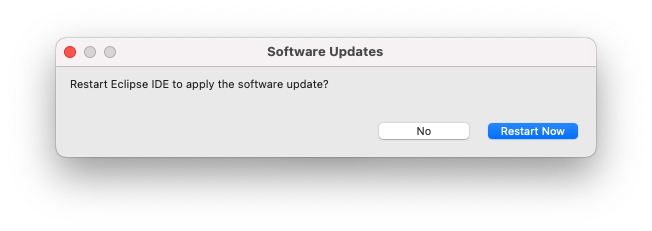
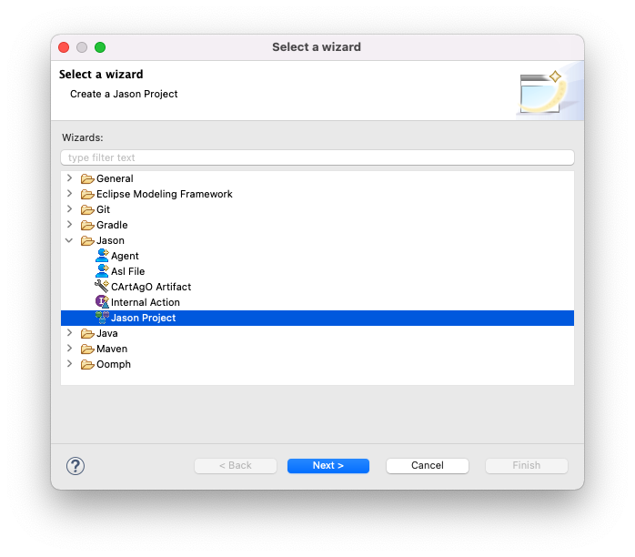

Tutorial 1 - Installing Jason
This tutorial describes how to install everything needed for Jason development, including Java SE, Jason, Eclipse, and the Jason plugin for Eclipse.
Java
Step 1 - Download and install Java SE
Java Platform, Standard Edition (Java SE) is available to download from Oracle.
As of January 2023, the latest version is Java SE 19.
Select Download and then choose the most appropriate package for your platform: typical options are x64 Installer for Windows and x64 DMG Installer for macOS.
Download and install the selected package.
Jason
Step 2 - Download and install Jason
Jason is available to download from SourceForge.
As of January 2023, the latest version is Jason 3.1. However, for this tutorial series we will use Jason 2.6.3.
Note: Jason 3.0 introduced some changes to the language that are not well-documented and do not guarantee compatibility with this tutorial series so you must use Jason 2.6.3.
Download and extract jason-2.6.3.zip as a directory called jason-2.6.3 and remember its absolute path, e.g. /path/to/jason-2.6.3/.
Note: Do not install Jason in a protected directory, which includes
/Users/your_username/Downloads/on macOS.
Step 3 - Run the Jason configuration tool
Run the file jason-2.6.3/libs/jason-2.6.3.jar.
Note: On macOS you may see an error message "jason-2.6.3.jar" cannot be opened because it is from an unidentified developer. If this occurs, you should navigate in macOS to System Preferences > Security & Privacy > General and select Open Anyway beside the message "jason-2.6.3.jar" was blocked from use because it is not from an identified developer.
Typically most fields are filled automatically, but in some cases you may be required to manually enter values.
Ensure that the following fields are filled and correct:
- Jason > jason.jar location:
/path/to/jason-2.6.3/libs/jason-2.6.3.jar - Java Home > Directory: path to your Java home directory (e.g.
/Library/Java/JavaVirtualMachines/jdk-19.jdk/Contents/Home/on macOS) - Ant libs > Directory:
/path/to/jason-2.6.3/libs/ - JADE > jade.jar location:
/path/to/jason-2.6.3/libs/jade-4.3.jar
Select Save configuration and Exit.
Eclipse
Step 4 - Download and install Eclipse
Eclipse is available to download from Eclipse Foundation.
As of January 2023, the latest version is Eclipse 2022-12. However, for this tutorial series we will use Eclipse 2021-12. The Jason plugin for Eclipse is not compatible with more recent versions of Eclipse due to a missing dependency, so you must use Eclipse 2021-12.
Download the most appropriate package for your platform (e.g. x86_64 for Windows and macOS) and then run the Eclipse installer.
When prompted, choose Eclipse IDE for Eclipse Committers and complete the installation. The Jason plugin for Eclipse is not compatible with other variants of Eclipse 2021-12, including Eclipse IDE for Java Developers and Eclipse IDE for Enterprise Java and Web Developers.
Note: Do not install Eclipse in a protected directory, which includes
/Users/your_username/Downloads/on macOS.
Step 5 - Install the Jason plugin for Eclipse
Open Eclipse.
Choose a directory for your workspace and select Launch.
Select Help > Install New Software > Add.
Select Add... in the new window.
In the Name field enter jasonide and in the Location field enter http://jason.sourceforge.net/eclipseplugin/20x/.

Select Add.
Mark the checkbox beside jasonide and select Next.

Select Next again.

Accept the terms and select Finish.

Select Install anyway.

Select Restart Now.
Note: If you encountered an error
Public key not found for 70b824d9a6b4ae29when attempting to install the Jason plugin for Eclipse then please try the following workaround. Navigate to Help > Install New Software > Manage. Removejasonide. Disable all entries except2021-12. Select Apply and Close. Restart Eclipse and return to Step 5.
Eclipse should now be open and ready for Jason development.
Note: More details can be found in the official installation instructions.
Test that it works
Step 6 - Create a new Jason project
Select File > New > Other > Jason > Jason Project from the Eclipse menu.

Select Next.

Enter hello_world in the Project name field and select Finish.

If you are prompted to open the project in Jason perspective, select Open Perspective.
A new Jason project will be created with a default directory structure and two auto-generated files: src/asl/sample_agent.asl and hello_world.mas2j.
Note: To see the new Jason project you may need to close the Welcome tab.
Step 7 - Run the Jason project
With the hello_world project in focus, select Run Jason Application in the Eclipse toolbar.
Note: There may be two identical buttons in the Eclipse toolbar; ensure that you select the button labelled Run Jason Application rather than the button labelled Run.

The above window should appear, which confirms that Jason is working correctly.
Step 8 - Terminate the Jason project
Select Stop at the bottom of the window.
Conclusion
You should now have a working installation of Jason ready to use for the rest of this tutorial series.
If you encountered issues during the installation and have been unable to resolve them yourself, please contact Kevin McAreavey via email or speak to a teaching assistant during one of the lab sessions.